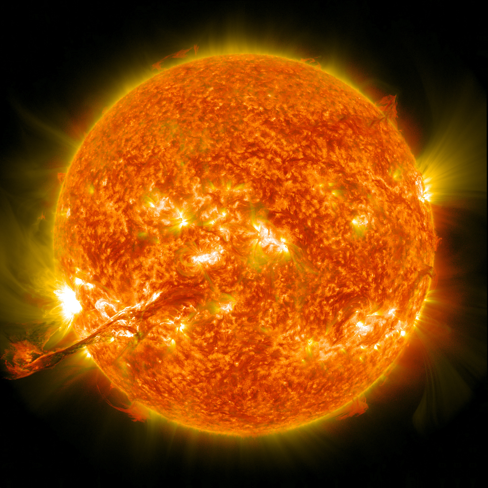

The Sun is the star at the center of the Solar System. It is a nearly perfect sphere of hot plasma,[18][19] heated to incandescence by nuclear fusion reactions in its core, radiating the energy mainly as visible light, ultraviolet light, and infrared radiation.
It is by far the most important source of energy for life on Earth. Its diameter is about 1.39 million kilometres (864,000 miles), or 109 times that of Earth. Its mass is about 330,000 times that of Earth; it accounts for about 99.86% of the total mass of the Solar System.
[20]Roughly three quarters of the Sun's mass consists of hydrogen (~73%); the rest is mostly helium (~25%), with much smaller quantities of heavier elements, including oxygen, carbon, neon and iron.[21]
